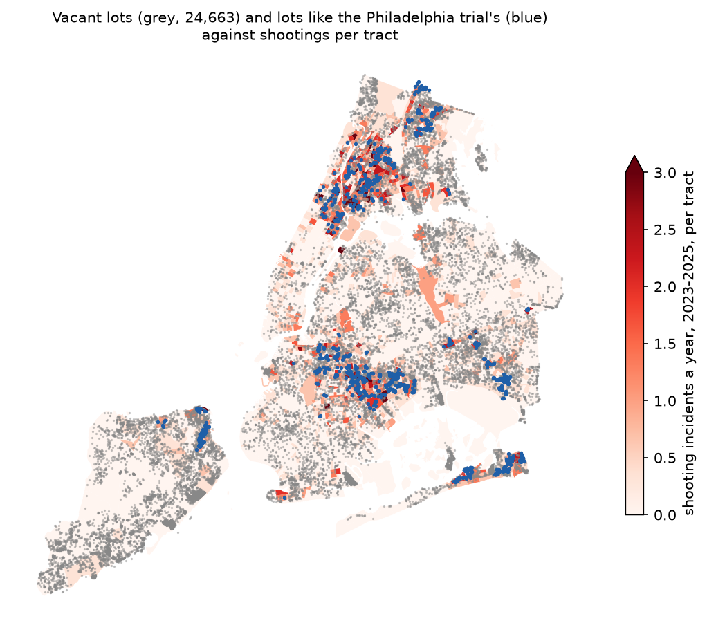
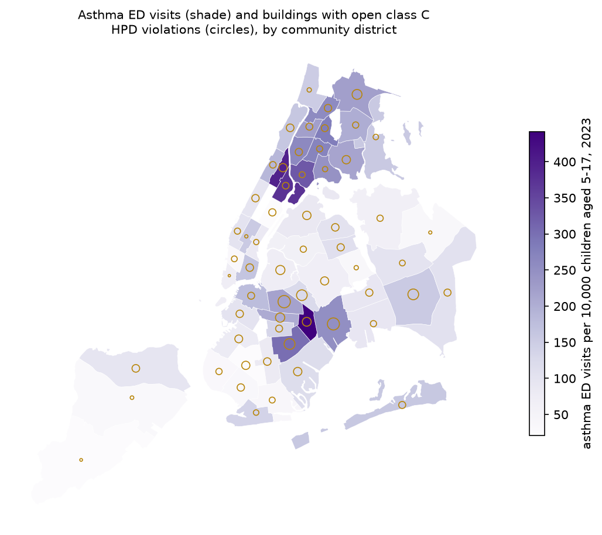
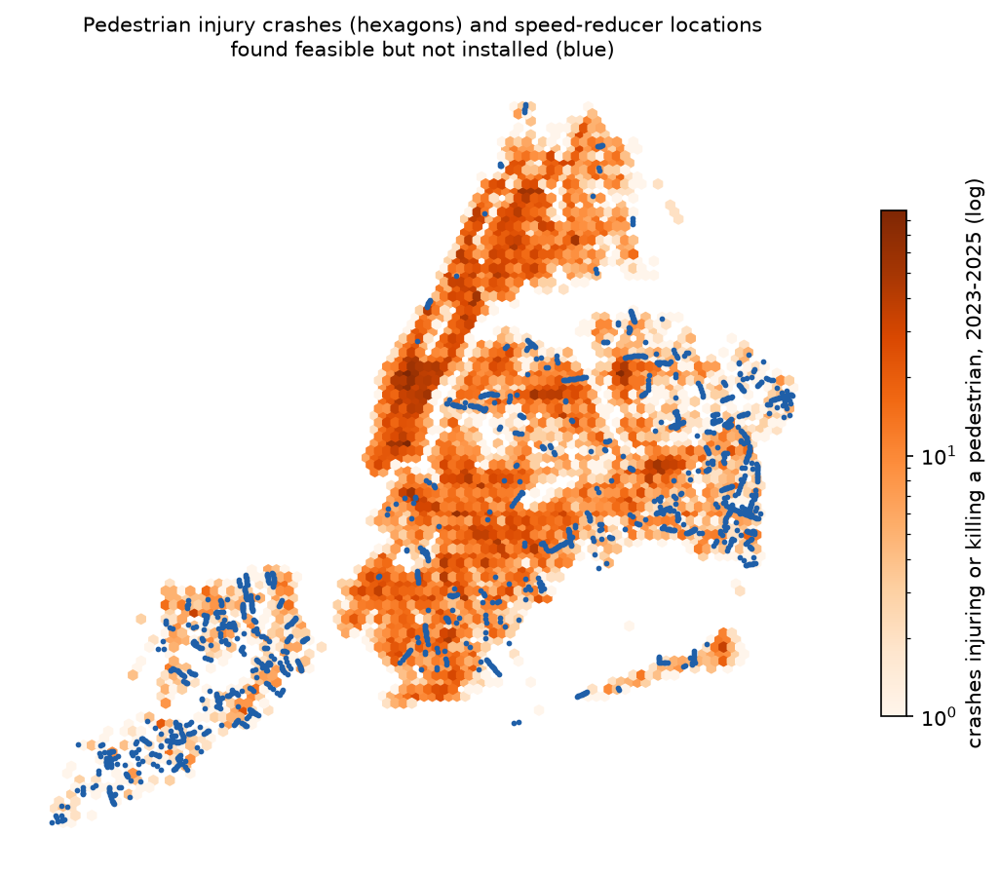

Each row is an intervention a city agency or a private charity could pay for. The components are not added up, because they are not on one scale and no weights can be defended. Click a column heading to sort by it. The effect is the headline finding from the System graph, read against its PubMed abstract; the burden and reach come from New York's own data. A red mark under "Population" means the evidence comes from a population unlike New York's. Method and sources: docs/levers.md.
| Lever | Design | Effect (95% interval) | Population | Breadth | Burden in New York | Reach in New York | Cost per unit | By place |
|---|
Effect scale: percentage change in the outcome, or in its odds where the study reports an odds ratio (which overstates the change in risk for common outcomes). The bar runs from −100% to +50%; blue is a benefit whose interval excludes zero, grey an interval that includes zero. Breadth: n domains with a verified benefit, n with a verified harm, n benefits from experimental designs, out of eight domains. Burden meter: the share of the burden held by the tenth of areas with the most.



Aerial imagery: USDA Farm Service Agency, National Agriculture Imagery Program (NAIP), 2022.